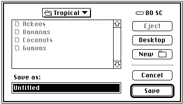
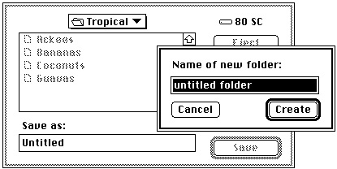
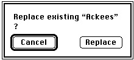

Saving a File
There are several ways for a user to indicate that the current contents of a document should be saved (that is, written to disk). The user can choose the File menu commands Save or Save As, or the user can click the Save button in a dialog box that you display when the user attempts to close a "dirty" document (that is, a document whose contents have changed since the last time it was saved). You can handle the Save menu command quite easily, as illustrated in Listing 1-11.Listing 1-11 Handling the Save menu command
FUNCTION DoSaveCmd: OSErr; VAR myWindow: WindowPtr; {pointer to the front window} myData: MyDocRecHnd; {handle to a document record} myErr: OSErr; BEGIN myWindow := FrontWindow; {get front window and its data} myData := MyDocRecHnd(GetWRefCon(myWindow)); IF myData^^.fileRefNum <> 0 THEN {if window has a file already} myErr := DoWriteFile(myWindow); {then write contents to disk} ELSE myErr := DoSaveAsCmd; {else ask for a filename} DoSaveCmd := myErr; END;TheDoSaveCmdfunction simply checks whether the frontmost window is already associated with a file. If so, thenDoSaveCmdcalls DoWriteFile to write the data to disk (using the "safe-save" process illustrated in the previous section). Otherwise, if no file exists for that window,DoSaveCmdcallsDoSaveAsCmd. Listing 1-12 shows a way to define theDoSaveAsCmdfunction.Listing 1-12 Handling the Save As menu command
FUNCTION DoSaveAsCmd: OSErr; VAR myWindow: WindowPtr; {pointer to the front window} myData: MyDocRecHnd; {handle to a document record} myReply: StandardFileReply; myFile: Integer; {file reference number} myErr: OSErr; BEGIN myWindow := FrontWindow; {get front window and its data} myData := MyDocRecHnd(GetWRefCon(myWindow)); myErr := noErr; StandardPutFile('Save as:', 'Untitled', myReply); IF myReply.sfGood THEN {user saves file} BEGIN IF NOT myReply.sfReplacing THEN myErr := FSpCreate(myReply.sfFile, 'MYAP', 'TEXT', smSystemScript); IF myErr <> noErr THEN Exit(DoSaveAsCmd); myData^^.fileFSSpec := myReply.sfFile; IF myData^^.fileRefNum <> 0 THEN {if window already has a file} myErr := FSClose(myData^^.fileRefNum);{close it} {Create document's resource fork and copy Finder resources to it.} FSpCreateResFile(myData^^.fileFSSpec, 'MYAP', 'TEXT', smSystemScript); myErr := ResError; IF myErr = noErr THEN myFile := FSpOpenResFile(myData^^.fileFSSpec, fsRdWrPerm); IF myFile > 0 THEN {copy Finder resources} myErr := DoCopyResource('STR ', -16396, gAppsResFile, myFile) ELSE myErr := ResError; IF myErr = noErr THEN myErr := FSClose(myFile); {close the resource fork} {Open data fork and leave it open.} IF myErr = noErr THEN myErr := FSpOpenDF(myData^^.fileFSSpec, fsRdWrPerm, myFile); IF myErr = noErr THEN BEGIN myData^^.fileRefNum := myFile; SetWTitle(myWindow, myReply.sfFile.name); myErr := DoWriteFile(myWindow); END; DoSaveAsCmd := myErr; END; END;TheStandardPutFileprocedure is similar to theStandardGetFileprocedure discussed earlier in this chapter. It manages the user interface for the default Save dialog box, illustrated in Figure 1-8.Figure 1-8 The default Save dialog box

If the user clicks the New Folder button, the Standard File Package presents a subsidiary dialog box like the one shown in Figure 1-9.
Figure 1-9 The new folder dialog box

If the user asks to save a file with a name that already exists at the specified location,
the Standard File Package displays a subsidiary dialog box, like the one shown in
Figure 1-10, to verify that the new file should replace the existing file.Figure 1-10 The name conflict dialog box

Note in Listing 1-12 that if the user is not replacing an existing file, the
DoSaveAsCmdfunction creates a new file and records the newFSSpecrecord in the window's document record. Otherwise, if the user is replacing an existing file,DoSaveAsCmdsimply records, in the window's document record, theFSSpecrecord returned byStandardGetFile.When
DoSaveAsCmdcreates a new file, it also copies a resource from your application's resource fork to the resource fork of the newly created file. This resource (with ID -16396) identifies the name of your application. (For more details about this resource,
see the chapter "Finder Interface" in Inside Macintosh: Macintosh Toolbox Essentials.)
TheDoSaveAsCmdfunction calls the application-defined routineDoCopyResource. Listing 1-13 shows a simple way to define theDoCopyResourcefunction.Listing 1-13 Copying a resource from one resource fork to another
FUNCTION DoCopyResource (theType: ResType; theID: Integer; source: Integer; dest: Integer): OSErr; VAR myHandle: Handle; {handle to resource to copy} myName: Str255; {name of resource to copy} myType: ResType; {ignored; used for GetResInfo} myID: Integer; {ignored; used for GetResInfo} BEGIN UseResFile(source); {set the source resource file} myHandle := GetResource(theType, theID); {open the source resource} IF myHandle <> NIL THEN BEGIN GetResInfo(myHandle, myID, myType, myName); {get resource name} DetachResource(myHandle); {detach resource} UseResFile(dest); {set destination resource file} AddResource(myHandle, theType, theID, myName); IF ResError = noErr THEN WriteResource(myHandle); {write resource data} END; DoCopyResource := ResError; {return result code} ReleaseResource(myHandle); END;See the chapter "Resource Manager" in Inside Macintosh: More Macintosh Toolbox for details about the routines used in Listing 1-13.